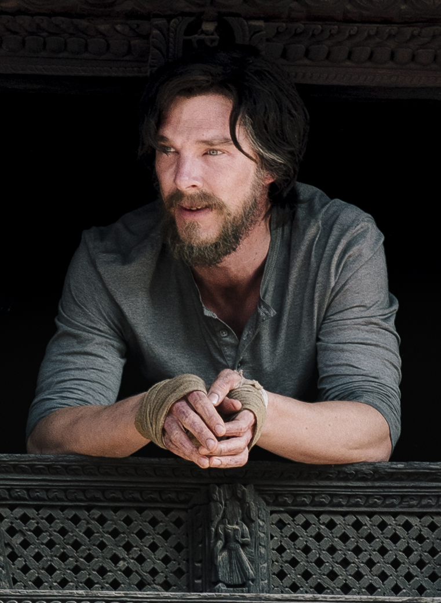

Benedict Cumberbatch
Présentation
Benedict Cumberbatch, né le 19 juillet 1976 à Londres, est un acteur et producteur britannique.
Diplômé en art dramatique à la London Academy of Music and Dramatic Art,
il commence sa carrière par le théâtre dans diverses pièces et se fait vite remarquer,
notamment en 2005 dans une mise en scène de Hedda Gabler.
En 2011, il remporte un Olivier Award pour son double rôle dans Frankenstein, avant d'endosser le rôle-titre de Hamlet en 2015.
À la télévision, son rôle du physicien dans le téléfilm Hawking en 2004 lui vaut une Nymphe d'or, première récompense de sa carrière.
Grâce à son interprétation du célèbre détective dans la série Sherlock (depuis 2010),
il devient une star internationale et décroche un Emmy Award du meilleur acteur.
Ses rôles dans Parade's End, The Hollow Crown et Patrick Melrose sont également salués.
Au cinéma, après des seconds rôles dans divers films tels Cheval de guerre,
La Taupe, Twelve Years a Slave, Un été à Osage County et des rôles principaux dans quelques films indépendants
dont Troisième étoile à droite, il gagne encore en popularité en interprétant Julian Assange dans Le Cinquième Pouvoir,
l'antagoniste dans Star Trek Into Darkness et le dragon Smaug en capture de mouvement dans la série de films Le Hobbit.
En 2015, il est nommé à l'Oscar du meilleur acteur lors de la 87e cérémonie des Oscars pour son interprétation d'Alan Turing
dans Imitation Game.
En 2016, il intègre l'Univers cinématographique Marvel avec le film Doctor Strange où il interprète
Stephen Strange, personnage qu'il reprend pour Thor : Ragnarok (2017), Avengers: Infinity War (2018), Avengers: Endgame (2019),
Spider-Man: No Way Home (2021) et Doctor Strange in the Multiverse of Madness (2022).
Sa voix caractéristique l'amène à pratiquer ses talents d'acteur dans des œuvres radiophoniques, des livres audio,
des films d'animation, mais aussi à participer à des documentaires en tant que narrateur.
En 2013, il cofonde sa société de production SunnyMarch et l'association Letters Live qui promeut l'alphabétisation en
organisant des évènements permettant de collecter des fonds pour diverses organisations caritatives. En 2014, Time l'inclut dans son
Time 100 des « personnes les plus influentes du monde ».
En 2015, la reine Élisabeth II le nomme commandeur de l'Ordre de l'Empire
britannique pour services rendus aux arts britanniques et ses activités caritatives.
Depuis janvier 2018, il est président des
syndics de la London Academy of Music and Dramatic Art, son ancienne école.